EDA
Summary statistics and ten figures exploring the cleaned data
Summary Statistics
Descriptive statistics for the national table, 26 annual observations covering 2000 to 2025. Skewness is the column worth reading: the ownership and rate measures are close to symmetric, while price and earnings are mildly right-skewed by their upward trend rather than by outliers.
| Column | Mean | Median | Variance | Std dev | Skewness | Count |
|---|---|---|---|---|---|---|
ownership_rate_lt25_pct | 23.34 | 22.93 | 1.66 | 1.29 | 0.54 | 26 |
ownership_rate_25_29_pct | 36.03 | 35.24 | 10.79 | 3.28 | 0.25 | 26 |
ownership_rate_30_34_pct | 50.70 | 49.23 | 15.24 | 3.90 | 0.37 | 26 |
annual_earnings_25_34 | 39,340 | 36,784 | 75,881,392 | 8,711.0 | 0.98 | 26 |
annual_earnings_25_34_real2025 | 53,963 | 53,162 | 6,560,728 | 2,561.4 | 0.83 | 26 |
national_zhvi | 223,512 | 202,524 | 5,343,570,842 | 73,100 | 1.01 | 26 |
mortgage_rate_30yr_pct | 5.21 | 5.19 | 1.90 | 1.38 | 0.12 | 26 |
price_to_income_25_34 | 5.59 | 5.55 | 0.53 | 0.73 | 0.15 | 26 |
payment_to_income_pct_25_34 | 29.71 | 29.00 | 41.01 | 6.40 | 0.41 | 26 |
housing_starts_thousands | 1,307.7 | 1,348.8 | 174,704 | 418.0 | -0.17 | 26 |
The full table for all 22 numeric columns is written to
data_clean/summary_statistics.csv by the pipeline.

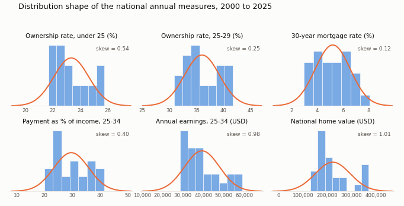
Exploratory Data Analysis
Exploration of the cleaned tables shows a pattern more complicated than steady decline. Homeownership among young householders rises to a peak in the mid-2000s, collapses through the following decade, and recovers only partially, leaving both the 25-to-29 and 30-to-34 brackets well below where they stood before 2008. Affordability, measured as the share of income required to service a mortgage on a typical home, does not decline steadily either: it is worst in 2023 at 41.5 percent, better than at any point in the series in 2012 at 20.0 percent, and roughly equal in 2000 and 2019. The figures below examine each component in turn, ownership by age, earnings in nominal and real terms, prices, interest rates, and the geographic distribution across metropolitan areas, before the modelling sections take up the questions that require more than description.
One result in the exploration runs against expectation and is worth stating plainly. Homeownership among householders under 25 rose over the period, from 21.7 percent in 2000 to 24.2 percent in 2025, while every older young-adult bracket fell. The most likely explanation is compositional rather than economic: if fewer people under 25 form independent households at all, those who do are drawn disproportionately from those able to buy. The data assembled here can establish that the divergence exists but cannot confirm the mechanism, and the finding is treated accordingly.
Ten figures. Each carries a title, axis labels and two sentences beneath: what it shows, then what it means. Thumbnails link through to the full-size image.

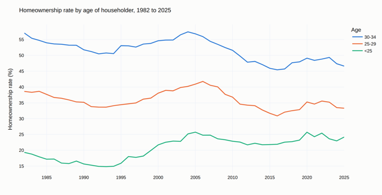

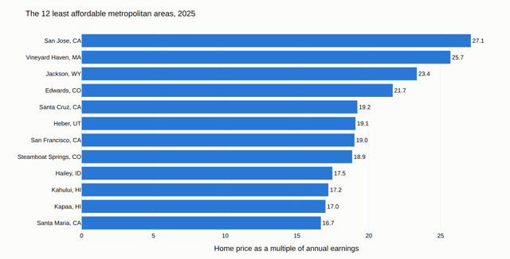

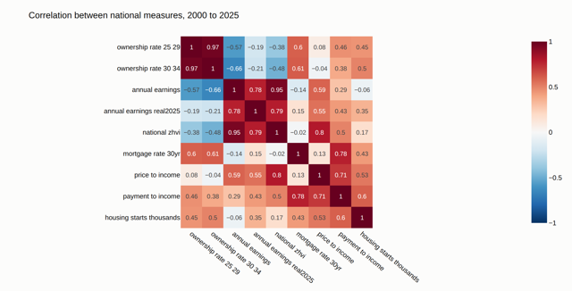

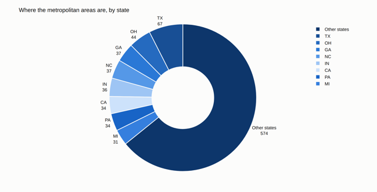

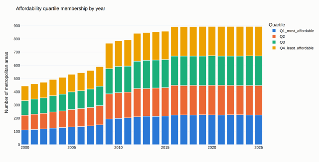

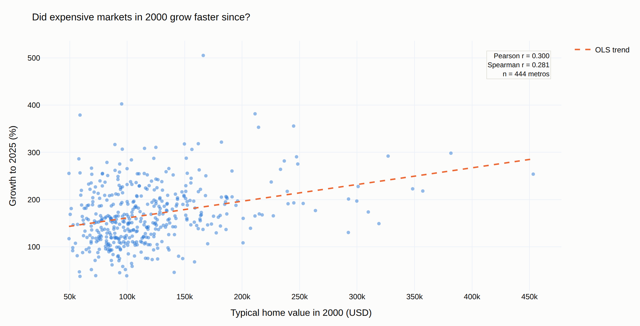

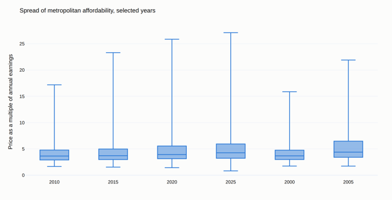

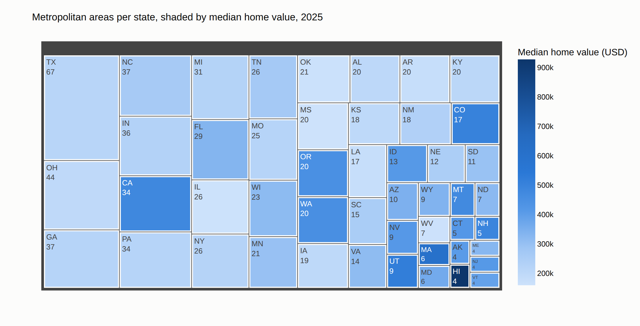

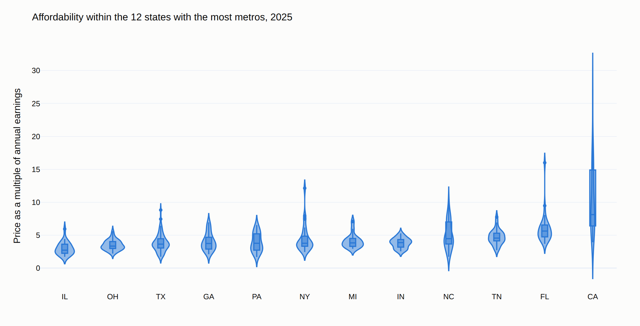

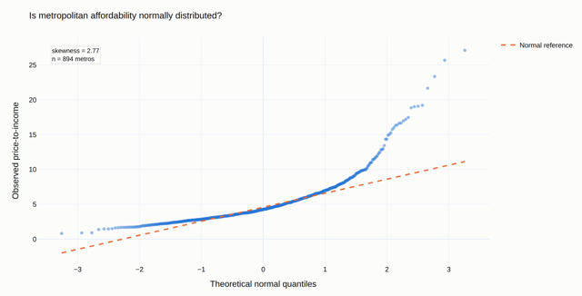
Code used
Every figure above is produced by a single script that reads the cleaned tables and writes both a full-size image and a thumbnail. Re-running it regenerates all ten, so the figures cannot drift from the data behind them.
# EDA figures for the Gen Z Homeownership project
# Regenerates every figure in docs/images/ from the cleaned tables in data_clean/
# Run: python3 make_eda_figures.py
import plotly.express as px
import plotly.graph_objects as go
out_dir = "docs/images"
os.makedirs(out_dir, exist_ok=True)
⋮
# Figure 1. Homeownership rate by age of householder
fig1 = px.line(wide, x="year",
y=["ownership_rate_lt25_pct", "ownership_rate_25_29_pct",
"ownership_rate_30_34_pct"],
labels={"value": "ownership rate (%)", "year": ""})
fig1.update_traces(line=dict(width=2.4))
save(fig1, "eda-01")
⋮ # nine more figures follow the same pattern: build with Plotly Express,
# annotate with the real statistic, save to html and screenshot to png